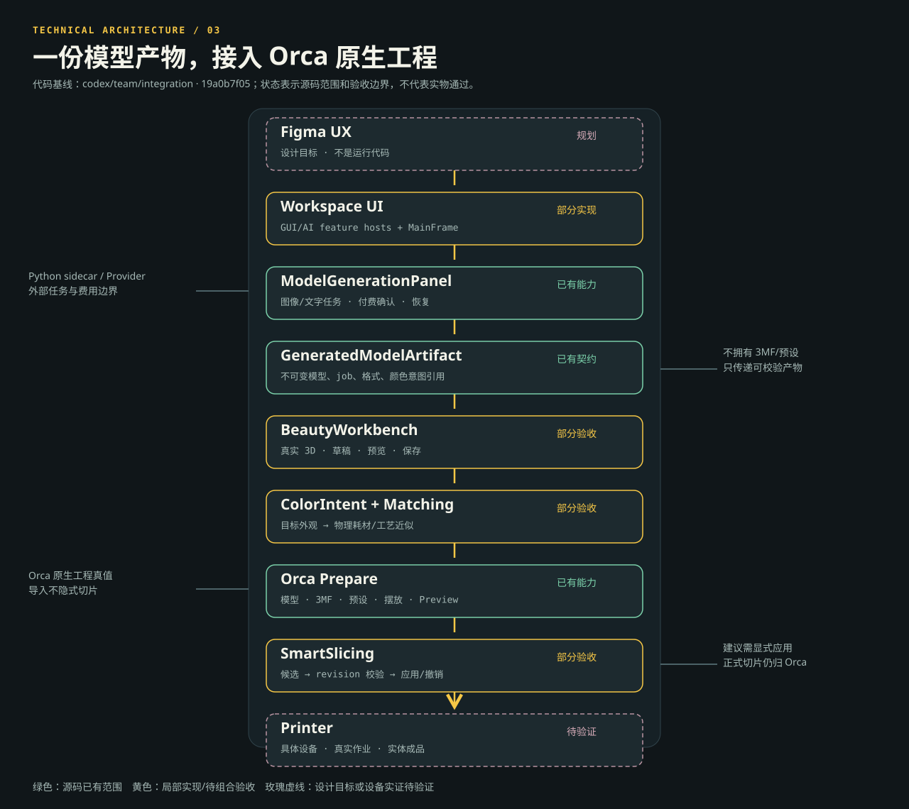

AI 3D PRINTING UX / DOCUMENTATION
从一个想法，
到一件真实存在的作品。
产品规格、用户旅程与工程边界的统一入口。图示表达目标流程；当前代码能力与未验证项请以 PRD 和需求证据为准。
01 / PRD ↗定位、功能状态、异常、验收与后续方向
02 / User Journey ↗照片创作、已有模型、历史继续三条路径
03 / Evidence ↗需求、Figma 节点、代码模块与测试关注点
可维护的 SVG 架构图


